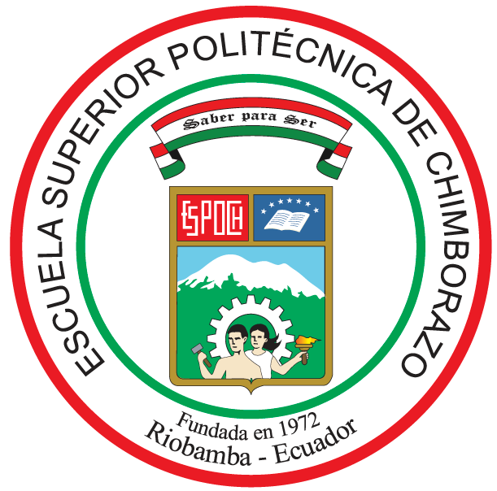
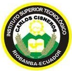

| Nombres Completos: | Erick Fabián Cruz Estrella | |
| Cédula de Identidad: | 060458239-5 | |
| Lugar/Fecha de Nacimiento: | Riobamba, 22 mayo 1994 | |
| Dirección: | Parroquia San Juan: Gabriel Moncayo y Pedro Arias. Riobamba - Ecuador | |
| Teléfono: | (03)2933166 / 0995790620 | |
| E-mail: | erick.cruz@espoch.edu.ec |
Egresado de la carrera de Ingeniería en Sistemas Informáticos de la ESPOCH , experiencia en desarrollo web y consultorías en el campo de las TIC.
"Dentro de veinte años estarás más decepcionado por las cosas que no hiciste que por las que hiciste. Así que suelta las amarras. Atrapa los vientos alisios en tus velas. Explora. Sueña. Descubre". - Mark Twain -
| 2013 - 2019 | Egresado de la carrera de Ingeniería en Sistemas Informáticos |  | ||
| 2007 - 2012 | Bachiller Técnico Industrial Especialización Electromecánica Automotriz |  |